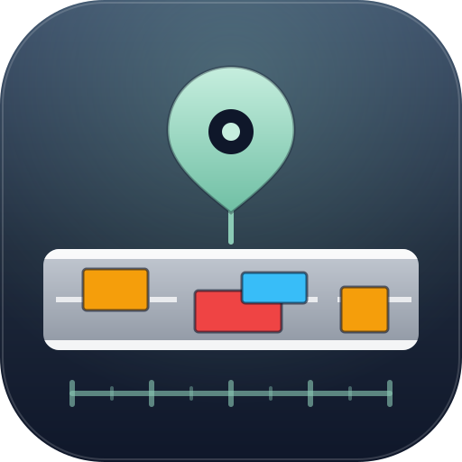

Mapa Linear
· BR-226/RN
SR/RN 515/2024
·
km 290+320 → 421+020
·
Memórias de Cálculo 2 a 24
130,70 km
←
Versão anterior
Anterior
—
Reparos localizados
—
Remendos profundos
—
Revestimento (CBUQ)
—
Reparos sobrepostos
—
Reparos sobre revestimento novo
Mapa Linear de Execução
−
+
Obra
Tudo
Lado D
LD
Lado E
LE
Período
até
Destaques
Destacar sobreposição
Sobrepõe
Destacar reparo sobre revestimento
Sobre rev.
Esmaecer reparo coberto
Coberto
em até
1 mês
3 meses
6 meses
12 meses
sem limite
sobrepõe outro reparo
possível (estaca arredondada)
feito sobre revestimento novo
coberto por revestimento posterior
km 290
Soluções
Reparos
Sobreposições
Soluções em trecho
Ordenar por
Mostrar mais
Notas sobre os dados
Dados extraídos das Memórias de Cálculo 2 a 24 e conferidos com as planilhas de medição
·
Contrato SR/RN 515/2024 — BR-226/RN
·
PATO
Mapa
Tabela
Resumo